Imposto de Renda 2026: Receita paga em 30 de novembro um lote residual de R$ 666 milhões, e o dinheiro só cai na conta do titularImpôt sur le revenu 2026 au Brésil : le fisc verse le 30 novembre un lot résiduel de 666 millions de reais, uniquement sur le compte du déclarantBrazil 2026 income tax: the Federal Revenue pays a R$666 million residual batch on 30 November, only into the filer's own account
25 NOV 2026 · Robson Alves

Big techs no Brasil: projeto que dá ao Cade poder sobre as grandes plataformas vai a votação na Câmara na próxima semanaBig tech au Brésil : le projet qui donne au Cade un pouvoir sur les grandes plateformes sera voté à la Chambre la semaine prochaineBig tech in Brazil: bill giving the Cade power over large platforms heads to a Chamber vote next week
25 NOV 2026 · Robson Alves

Câmara aprova o texto-base do ajuste fiscal por 353 votos a 128: o teto de crescimento real dos gastos cai de 2,5% para 2% a partir de 2027La Chambre des députés du Brésil adopte le texte de base de l'ajustement budgétaire par 353 voix contre 128 : la hausse réelle des dépenses sera plafonnée à 2 % au lieu de 2,5 % à partir de 2027Brazil's lower house approves the core of the fiscal package by 353 votes to 128: real spending growth will be capped at 2% instead of 2.5% from 2027
24 NOV 2026 · Robson Alves

Fim da escala 6x1 no Brasil: Lula assina decreto, e a jornada máxima cai para 42 horas semanais com dois dias de descanso a partir de 16 de dezembroFin de la semaine de six jours au Brésil : Lula signe le décret, et la durée maximale passe à 42 heures avec deux jours de repos à partir du 16 décembreEnd of the six-day week in Brazil: Lula signs the decree, and maximum working time falls to 42 hours a week with two rest days from 16 December
21 NOV 2026 · Robson Alves
Bolsonaro está na UTI em Brasília com obstrução abdominal e segue sem previsão de altaBolsonaro en soins intensifs à Brasília pour une occlusion abdominale, sans date de sortieBolsonaro in intensive care in Brasília with an abdominal obstruction, no discharge date set
23 NOV 2026 · Robson Alves
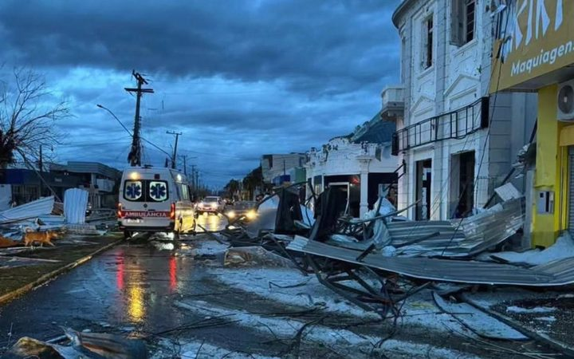
Temporal com suspeita de tornado devasta Tupanciretã, no Rio Grande do Sul: três mortos, cerca de 60 feridos e quase todas as casas atingidasUn violent orage, avec suspicion de tornade, dévaste Tupanciretã, dans le Rio Grande do Sul : trois morts, une soixantaine de blessés et presque toutes les maisons touchéesStorm with suspected tornado devastates Tupanciretã in Rio Grande do Sul: three dead, about 60 injured and almost every home hit
22 NOV 2026 · Robson Alves
Flamengo empata com o Palmeiras e é campeão brasileiro de 2026, o segundo título seguidoFlamengo fait match nul contre Palmeiras et remporte le championnat du Brésil 2026, son deuxième titre d'affiléeFlamengo draw with Palmeiras to win the 2026 Brazilian title, their second in a row
22 NOV 2026 · Robson Alves
Euro chega a R$ 6,47 e dólar fecha no maior valor desde abril de 2025; Banco Central vende US$ 1 bilhãoL'euro atteint 6,47 reais et le dollar clôture à son plus haut depuis avril 2025 ; la Banque centrale du Brésil vend 1 milliard de dollarsEuro hits R$ 6.47 and the dollar closes at its highest since April 2025; Brazil's Central Bank sells US$ 1 billion
20 NOV 2026 · Robson Alves
Feriado da Consciência Negra nesta sexta, 20 de novembro: bancos fecham no Brasil, e quem manda dinheiro da Europa deve se programarJour férié de la Conscience noire ce vendredi 20 novembre : les banques ferment au Brésil, et ceux qui envoient de l'argent depuis l'Europe doivent s'organiserBlack Consciousness Day holiday this Friday, 20 November: banks close in Brazil, and anyone sending money from Europe should plan ahead
19 NOV 2026 · Robson Alves
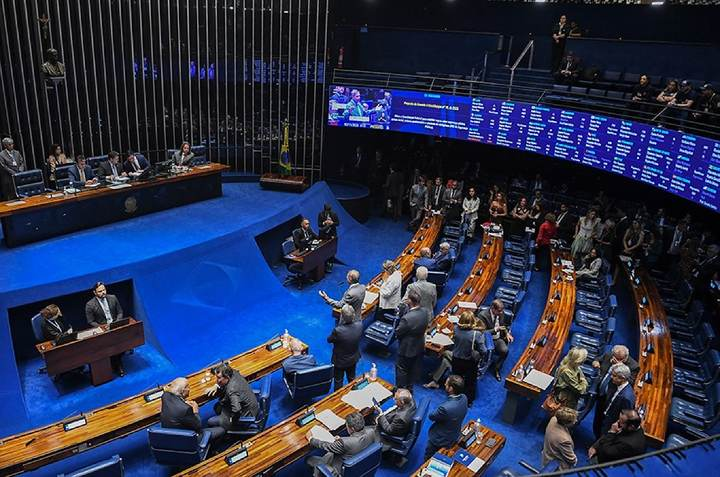
Senado aprova o ajuste fiscal de até R$ 56 bilhões para 2027, e o dólar fecha a R$ 5,87, o maior valor desde abril de 2025Le Sénat brésilien adopte l'ajustement budgétaire jusqu'à 56 milliards de reais pour 2027, et le dollar clôture à 5,87 reais, au plus haut depuis avril 2025Brazil's Senate passes a fiscal package worth up to 56 billion reais for 2027, as the dollar closes at 5.87 reais, its highest since April 2025
19 NOV 2026 · Robson Alves
Reforma tributária: Durigan diz ao Senado que a CBS terá alíquota média de 8,5%, e decisão deve sair até 15 de dezembroRéforme fiscale au Brésil : Durigan annonce au Sénat un taux moyen de 8,5 % pour la CBS, décision attendue d'ici au 15 décembreBrazil tax reform: Durigan tells the Senate the CBS will average 8.5%, with a decision due by 15 December
18 NOV 2026 · Robson Alves
Perdão das dívidas do MEI: o que vale a partir de 1º de janeiro de 2027 e a condição para não perder o benefícioBrésil : l'effacement des dettes des micro-entrepreneurs (MEI) prend effet le 1er janvier 2027, sous conditionBrazil: debt forgiveness for micro-entrepreneurs (MEI) takes effect on 1 January 2027, with one condition
18 NOV 2026 · Robson Alves
Dólar fecha a R$ 5,78, o maior valor desde abril de 2025, e o euro passa de R$ 6,31 no Banco Central: o que muda para quem vive entre a Europa e o BrasilLe dollar clôture à 5,78 réais, au plus haut depuis avril 2025, et l'euro dépasse 6,31 réais à la Banque centrale : ce que cela change pour ceux qui vivent entre l'Europe et le BrésilThe dollar closes at 5.78 reais, its highest since April 2025, and the euro tops 6.31 reais at the Central Bank: what it means for people living between Europe and Brazil
17 NOV 2026 · Robson Alves
Prévia do PIB: atividade econômica do Brasil recua 0,25% em setembro e 0,86% no terceiro trimestreBrésil : l'activité économique recule de 0,25 % en septembre et de 0,86 % au troisième trimestre, selon la Banque centraleBrazil's economic activity falls 0.25% in September and 0.86% in the third quarter, central bank index shows
17 NOV 2026 · Robson Alves
Estados Unidos passam a exigir licença para vender chips avançados de inteligência artificial ao BrasilLes États-Unis imposent une licence pour vendre des puces avancées d'intelligence artificielle au BrésilUnited States now requires a licence to sell advanced artificial intelligence chips to Brazil
17 NOV 2026 · Robson Alves
Brasil bate a meta de turistas estrangeiros de 2026 dois meses antes: 7,59 milhões de visitantes até outubroLe Brésil atteint son objectif de touristes étrangers pour 2026 avec deux mois d'avance : 7,59 millions de visiteurs jusqu'en octobreBrazil hits its 2026 foreign tourist target two months early: 7.59 million visitors by October
16 NOV 2026 · Robson Alves
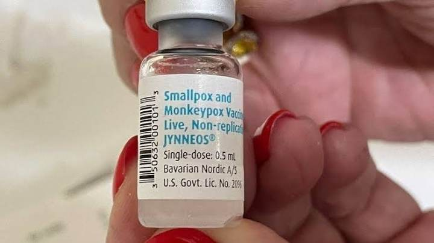
Mpox: Rio de Janeiro confirma a primeira morte de 2026 no Brasil, que já passa de 1.050 casosMpox : Rio de Janeiro confirme le premier décès de 2026 au Brésil, qui dépasse 1 050 casMpox: Rio de Janeiro confirms Brazil's first death of 2026 as cases top 1,050
16 NOV 2026 · Robson Alves
Lula assina acordos nas Filipinas e leva à cúpula da Asean o pedido do Brasil para subir de status no blocoLula signe des accords aux Philippines et porte au sommet de l'Asean la demande du Brésil de monter en statut dans le blocLula signs deals in the Philippines and takes Brazil's bid for upgraded status to the Asean summit
16 NOV 2026 · Robson Alves
Euro passa de R$ 6,23 no Banco Central e sobe 3% em novembro: o que muda para quem manda ou recebe dinheiro entre a Europa e o BrasilL'euro dépasse 6,23 reais à la Banque centrale du Brésil et gagne 3 % en novembre : ce que cela change pour les transferts entre l'Europe et le BrésilThe euro tops 6.23 reais at Brazil's Central Bank and gains 3% in November: what it means for money sent between Europe and Brazil
16 NOV 2026 · Robson Alves
Copa do Mundo Feminina 2027 no Brasil: venda de ingressos começa em 1º de dezembro, com jogos a partir de R$ 30Coupe du monde féminine 2027 au Brésil : la billetterie ouvre le 1er décembre, avec des matchs dès 30 reais2027 Women's World Cup in Brazil: ticket sales open on 1 December, with matches from BRL 30
14 NOV 2026 · Robson Alves

Mpox: Brasil passa de mil casos confirmados em 2026, com alta em outubro e novembroMpox : le Brésil dépasse les mille cas confirmés en 2026, avec une hausse en octobre et novembreMpox: Brazil passes 1,000 confirmed cases in 2026, with a rise in October and November
13 NOV 2026 · Robson Alves
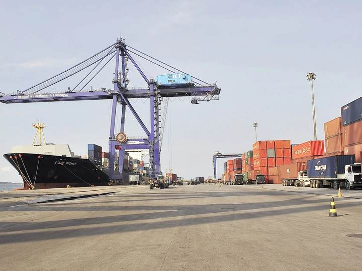
Seis meses de acordo Mercosul-UE: exportações do agro brasileiro para a Europa sobem 14,8%Six mois d'accord Mercosur-UE : les exportations agricoles brésiliennes vers l'Europe progressent de 14,8 %Six months of the EU-Mercosur deal: Brazil's farm exports to Europe rise 14.8%
13 NOV 2026 · Robson Alves
Tesouro Nacional confirma acesso indevido a 30 mil cadastros e 4 mil chaves Pix: como se proteger de golpesLe Trésor brésilien confirme un accès illégal à 30 000 comptes et 4 000 clés Pix : comment se protéger des arnaquesBrazil's National Treasury confirms unauthorised access to 30,000 records and 4,000 Pix keys: how to avoid scams
13 NOV 2026 · Robson Alves
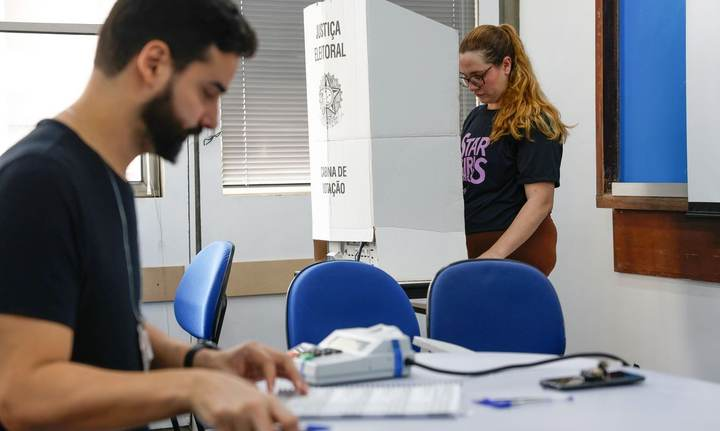
Faltou à eleição de 2026? O prazo para justificar o 1º turno termina em 3 de dezembroAbsent aux élections brésiliennes de 2026 ? Le délai pour justifier le premier tour expire le 3 décembreMissed Brazil's 2026 election? The deadline to justify the first round is 3 December
13 NOV 2026 · Robson Alves
Brasil apresenta pacote fiscal de até R$ 60 bilhões para 2027Le Brésil présente un plan budgétaire jusqu'à 60 milliards de reais pour 2027Brazil unveils fiscal package worth up to R$60 billion for 2027
13 NOV 2026 · Robson Alves
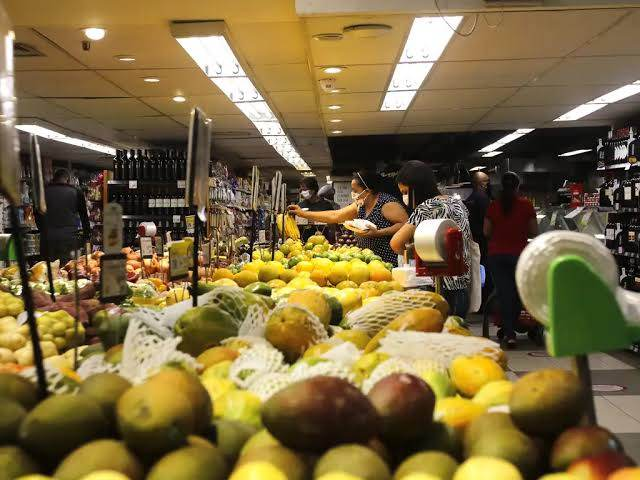
Inflação no Brasil desacelera para 0,14% em outubro, mas segue acima do teto em 12 mesesAu Brésil, l'inflation ralentit à 0,14 % en octobre mais reste au-dessus du plafond sur 12 moisBrazil's inflation slows to 0.14% in October but stays above the ceiling over 12 months
13 NOV 2026 · Robson Alves

Reforma tributária: governo vai propor regra opcional para as empresas se adaptarem à CBS em 2027Réforme fiscale au Brésil : le gouvernement proposera une règle optionnelle pour aider les entreprises à passer à la CBS en 2027Brazil tax reform: government to propose an optional rule to help companies adapt to the new CBS tax in 2027
13 NOV 2026 · Robson Alves
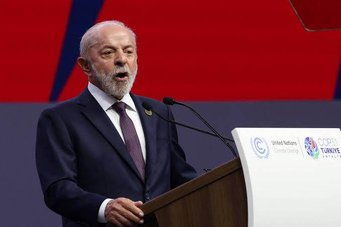
Na COP31, Lula pede que o planeta não fique à mercê de disputas e cobra dinheiro para o fundo das florestasÀ la COP31, Lula demande que la planète ne soit pas otage des rivalités et réclame des fonds pour les forêts tropicalesAt COP31, Lula says the planet must not be held hostage to rivalries and calls for money for the tropical forest fund
13 NOV 2026 · Robson Alves
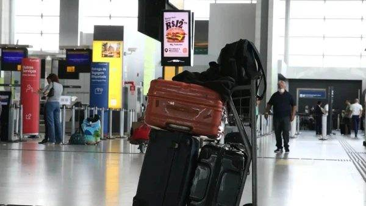
Natal no Brasil: Receita atualiza o Guia do Viajante e o imposto da bagagem pode ser pago em até 30 diasNoël au Brésil : la Receita Federal met à jour le guide du voyageur, la taxe sur les bagages payable sous 30 joursChristmas in Brazil: the tax authority updates its Traveller's Guide, and baggage duty can be paid within 30 days
13 NOV 2026 · Robson Alves

Receita Federal prorroga até 30 de dezembro a negociação de dívidas em discussão administrativa: o que vale para quem mora no exteriorLe fisc brésilien prolonge jusqu'au 30 décembre la négociation des dettes en contentieux administratif : ce qui vaut pour ceux qui vivent à l'étrangerBrazil's tax office extends to 30 December the window to settle debts under administrative dispute: what applies to those living abroad
10 NOV 2026 · Robson Alves
Ata do Copom: Banco Central diz que a piora das expectativas de inflação exige juros altos por mais tempo, e a Selic segue em 13,75%Procès-verbal du Copom : la Banque centrale du Brésil estime que la dégradation des anticipations d'inflation impose des taux élevés plus longtemps, le Selic reste à 13,75 %Copom minutes: Brazil's Central Bank says worsening inflation expectations call for high rates for longer, and the Selic stays at 13.75%
10 NOV 2026 · Robson Alves
Fim da escala 6x1: indústria e comércio vão ao STF, e Flávio Dino faz audiência de conciliação nesta terça, 10 de novembroFin du régime 6x1 au Brésil : l'industrie et le commerce saisissent la Cour suprême, qui tient une audience de conciliation ce mardi 10 novembreEnd of Brazil's 6x1 work schedule: industry and retail go to the Supreme Court, which holds a conciliation hearing on Tuesday, 10 November
9 NOV 2026 · Robson Alves
Cripto no Brasil: o Banco Central passa a publicar a lista de empresas que podem operar, e estar nela ainda não é ter licençaCrypto au Brésil : la Banque centrale publie la liste des sociétés autorisées à opérer, mais y figurer ne vaut pas encore licenceCrypto in Brazil: the Central Bank starts publishing the list of firms allowed to operate, and being on it is not yet a licence
10 NOV 2026 · Robson Alves
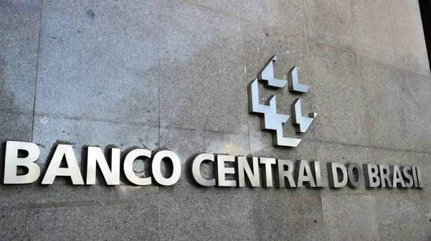
Mercado já não vê corte da Selic em 2026 e projeta dólar a R$ 5,35Brésil : le marché ne voit plus de baisse du taux Selic en 2026 et table sur un dollar à 5,35 réaisBrazil: markets no longer expect a Selic cut in 2026 and see the dollar at R$ 5.35
9 NOV 2026 · Robson Alves

COP31 começa hoje na Turquia: Lula chega na terça e leva o fundo das florestas para a mesa com três países europeusLa COP31 s'ouvre aujourd'hui en Turquie : Lula arrive mardi et porte le fonds pour les forêts avec trois pays européensCOP31 opens today in Turkey: Lula arrives on Tuesday and brings the forest fund to the table with three European countries
9 NOV 2026 · Robson Alves
Brasil torna lei o Enamed: exame passa a ser condição para exercer a medicinaLe Brésil inscrit l'Enamed dans la loi : l'examen devient obligatoire pour exercer la médecineBrazil writes Enamed into law: the exam becomes a condition for practising medicine
7 NOV 2026 · Robson Alves
Brasil define por medida provisória o Imposto Seletivo de 2027: cobrança começa em 2 de fevereiro sobre carros, bebidas e cigarrosLe Brésil fixe par mesure provisoire l'Impôt sélectif de 2027 : il sera prélevé dès le 2 février sur les voitures, les boissons et le tabacBrazil sets its 2027 Selective Tax by provisional measure: collection starts on 2 February on cars, drinks and tobacco
6 NOV 2026 · Robson Alves
Senado aprova a PEC da Segurança Pública sem reduzir a maioridade penal, e Lula anuncia ministério por medida provisóriaBrésil : le Sénat adopte la réforme constitutionnelle de la sécurité publique, sans abaisser la majorité pénale, et Lula annonce un ministèreBrazil: Senate passes the Public Security constitutional amendment without lowering the age of criminal responsibility, and Lula announces a new ministry
6 NOV 2026 · Robson Alves
Sete brasileiros são eleitos para assembleias estaduais nos Estados UnidosSept Brésiliens élus dans des parlements d'État aux États-UnisSeven Brazilians elected to US state legislatures
5 NOV 2026 · Robson Alves
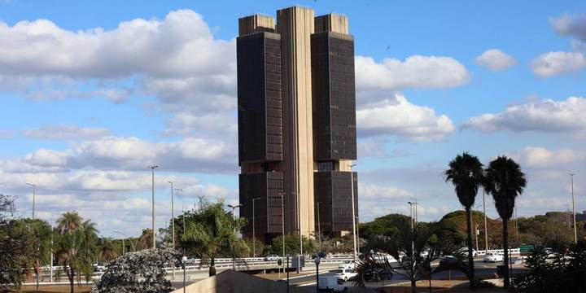
Banco Central para de cortar os juros: Selic fica em 13,75% e o Copom fala em cautelaBrésil : la Banque centrale interrompt la baisse des taux, le Selic reste à 13,75 %Brazil's central bank stops cutting: the Selic stays at 13.75% and Copom urges caution
5 NOV 2026 · Robson Alves
Brasil: desde hoje, o SAC tem de pôr uma pessoa para atender das 8h às 20h, todos os dias, e aceitar o cancelamento no primeiro contatoBrésil : depuis aujourd'hui, les services clients doivent proposer un interlocuteur humain de 8 h à 20 h, tous les jours, et accepter la résiliation dès le premier contactBrazil: from today, customer service must offer a human agent from 8am to 8pm every day and accept cancellation at first contact
2 NOV 2026 · Robson Alves
Brasil: a partir de 7 de novembro, vale-refeição e vale-alimentação passam a funcionar em qualquer maquininha habilitadaBrésil : à partir du 7 novembre, les cartes de titres-restaurant fonctionnent sur tout terminal habilitéBrazil: from 7 November, meal and food voucher cards work on any enabled card machine
2 NOV 2026 · Robson Alves
Pequenas empresas brasileiras de serviço passam a emitir a nota fiscal no padrão nacional desde 1º de novembroBrésil : depuis le 1er novembre, les petites entreprises de services émettent leurs factures au format nationalBrazil: since 1 November, small service businesses must issue invoices in the national format
1 NOV 2026 · Robson Alves
O acordo Mercosul-EFTA passa a valer entre o Brasil e a Noruega neste 1º de novembro: o que muda no comércio com a Europa fora da União EuropeiaL'accord Mercosur-AELE entre en vigueur entre le Brésil et la Norvège ce 1er novembre : ce qui change dans le commerce avec l'Europe hors Union européenneThe Mercosur-EFTA agreement takes effect between Brazil and Norway on 1 November: what changes in trade with Europe outside the European Union
1 NOV 2026 · Robson Alves
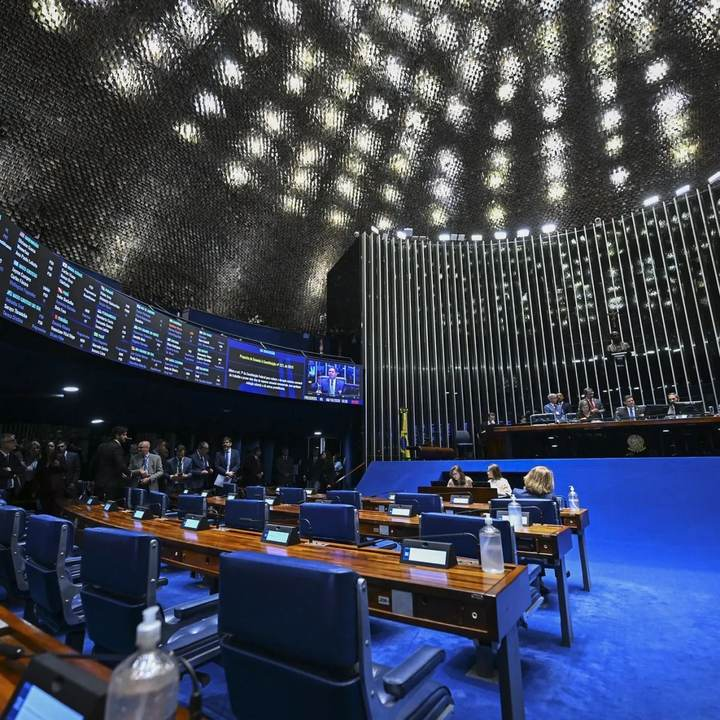
O Senado vota na terça-feira a PEC da Segurança Pública, principal aposta do governo Lula contra as facções, com emendas sobre a maioridade penalLe Sénat brésilien vote mardi la PEC de la sécurité publique, pari principal du gouvernement Lula contre les factions criminelles, avec des amendements sur la majorité pénaleBrazil's Senate votes on Tuesday on the public security amendment, the Lula government's main bet against criminal factions, with amendments on the age of criminal responsibility
31 OUT 2026 · Robson Alves
O euro passa de R$ 6 na semana após a eleição, e quem manda dinheiro da França para o Brasil volta a receber mais reaisL'euro dépasse 6 reais la semaine après l'élection, et ceux qui envoient de l'argent de France au Brésil reçoivent de nouveau plus de reaisThe euro tops 6 reais in the week after the election, and people sending money from France to Brazil get more reais again
31 OUT 2026 · Robson Alves
Desemprego no Brasil cai para 5,2% no 3º trimestre, o menor para o período desde 2012, com recorde de 103,6 milhões de pessoas ocupadasAu Brésil, le chômage tombe à 5,2 % au troisième trimestre, le plus bas pour cette période depuis 2012, avec un record de 103,6 millions d'actifs occupésBrazil's unemployment falls to 5.2% in the third quarter, the lowest for the period since 2012, with a record 103.6 million people in work
30 OUT 2026 · Robson Alves
Petrobras anuncia terceira descoberta de petróleo no mesmo poço da Foz do Amazonas, a cerca de 175 km da costa do AmapáPetrobras annonce une troisième découverte de pétrole dans le même puits de l'embouchure de l'Amazone, à environ 175 km des côtes de l'AmapáPetrobras announces a third oil discovery in the same well at the mouth of the Amazon, about 175 km off the coast of Amapá
30 OUT 2026 · Robson Alves
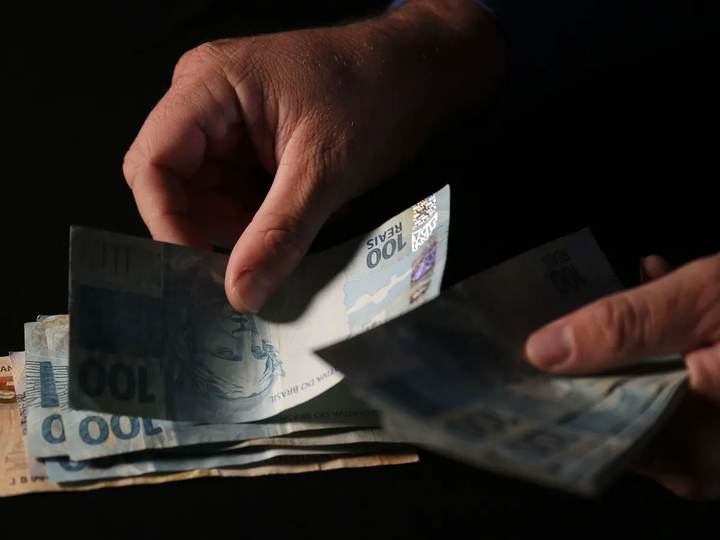
Brasil: dívida líquida do setor público sobe a 70% do PIB em setembro, e os juros da dívida passam de R$ 1,2 trilhão em 12 mesesBrésil : la dette nette du secteur public monte à 70 % du PIB en septembre, et les intérêts de la dette dépassent 1 200 milliards de reais sur 12 moisBrazil: net public sector debt rises to 70% of GDP in September, and interest on the debt tops 1.2 trillion reais over 12 months
29 OUT 2026 · Robson Alves
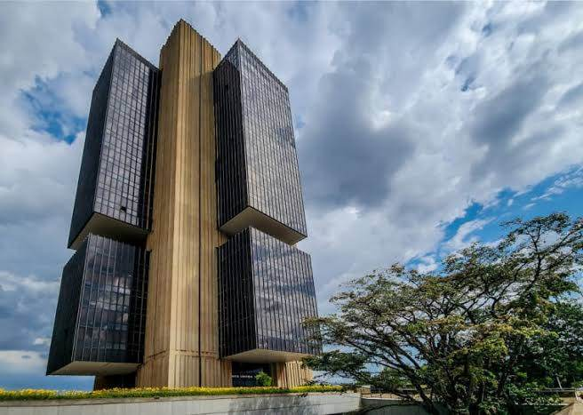
Brasil: inadimplência das famílias no crédito livre sobe a 8,1% em setembro, e os juros do cartão rotativo disparamBrésil : les impayés des ménages sur le crédit libre montent à 8,1 % en septembre, et les taux du crédit renouvelable s'envolentBrazil: household arrears on non-earmarked credit rise to 8.1% in September as revolving card rates jump
29 OUT 2026 · Robson Alves
A Holanda promete até 500 milhões de dólares ao fundo de florestas tropicais criado pelo BrasilLes Pays-Bas promettent jusqu'à 500 millions de dollars au fonds pour les forêts tropicales lancé par le BrésilThe Netherlands pledges up to 500 million dollars to the tropical forest fund launched by Brazil
29 OUT 2026 · Robson Alves
Reforma tributária: o TCU aprova a alíquota de referência da CBS em 11,3% para 2027, e a palavra final é do SenadoRéforme fiscale au Brésil : la Cour des comptes fixe le taux de référence de la CBS à 11,3 % pour 2027, le Sénat aura le dernier motBrazil's tax reform: the Federal Court of Accounts sets the CBS reference rate at 11.3% for 2027, with the Senate having the final say
28 OUT 2026 · Robson Alves
Flávio Bolsonaro não entrega os passaportes, a PF os cancela e a Reuters relata saída para os EUAFlávio Bolsonaro ne remet pas ses passeports, la police fédérale les annule et Reuters fait état d'un départ vers les États-UnisFlávio Bolsonaro fails to hand in his passports, Federal Police cancel them and Reuters reports he left for the US
28 OUT 2026 · Robson Alves
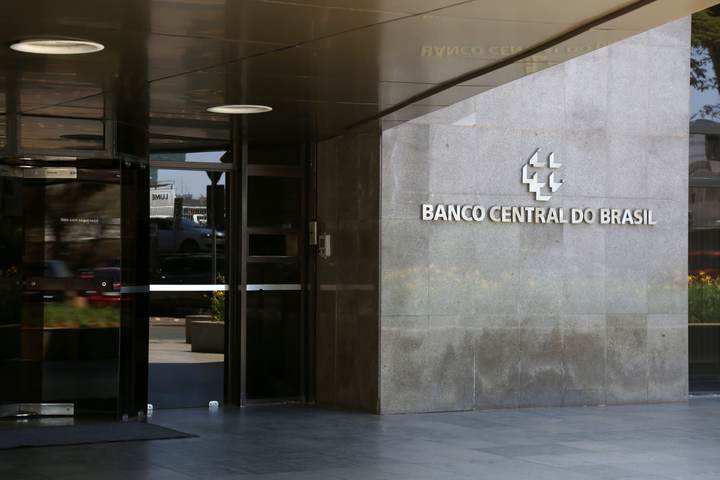
Banco Central: dívidas problemáticas das famílias brasileiras chegam ao maior nível desde 2012Banque centrale du Brésil : les crédits à problème des ménages au plus haut depuis 2012Brazil's central bank: problem loans to households hit their highest level since 2012
27 OUT 2026 · Robson Alves
Macron e a União Europeia parabenizam Lula e pedem parceria mais forte com o BrasilMacron et l'Union européenne félicitent Lula et appellent à renforcer le partenariat avec le BrésilMacron and the European Union congratulate Lula and call for a stronger partnership with Brazil
27 OUT 2026 · Robson Alves
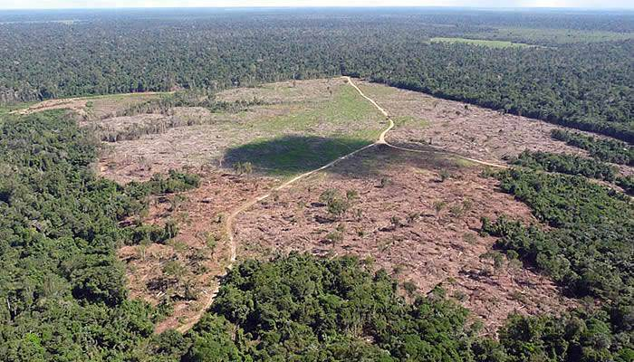
A queda do desmatamento no Brasil evitou até R$ 1,16 trilhão em danos climáticos no mundo, estima economista da FGVLa baisse de la déforestation au Brésil a évité jusqu'à 1 160 milliards de reais de dommages climatiques dans le monde, selon un économiste de la FGVLower deforestation in Brazil avoided up to 1.16 trillion reais in global climate damage, a FGV economist estimates
25 OUT 2026 · Robson Alves
Aos 46 anos, Ronaldinho Gaúcho volta a jogar: o Ravenna, da terceira divisão italiana, anuncia o retorno e mira o clássico de 15 de novembroÀ 46 ans, Ronaldinho revient sur les terrains : Ravenne, en troisième division italienne, annonce son retour et vise le derby du 15 novembreAt 46, Ronaldinho returns to the pitch: Ravenna, in Italy’s third tier, announces his comeback and eyes the 15 November derby
25 OUT 2026 · Robson Alves
Bradesco, C6 e Itaú lideram o ranking de reclamações do Banco Central no 3º trimestre; cartão de crédito é o principal motivoBradesco, C6 et Itaú en tête du classement des réclamations de la Banque centrale du Brésil au 3e trimestre ; la carte de crédit, premier motifBradesco, C6 and Itaú top Brazil's central bank complaints ranking for Q3; credit cards are the main reason
24 OUT 2026 · Robson Alves
Real mais forte na véspera do 2º turno: o euro vale R$ 5,64, e quem manda dinheiro da França recebe menos reaisLe real se renforce à la veille du second tour : l'euro vaut 5,64 reais, et les envois depuis la France rapportent moinsThe real strengthens on the eve of the run-off: the euro is worth R$5.64, and money sent from France buys fewer reais
24 OUT 2026 · Robson Alves
Brasil: Banco Central cria bloqueio de propaganda de crédito, painel de dívidas e regras para empréstimo oferecido no PixBrésil : la Banque centrale crée un blocage des publicités de crédit, un tableau des dettes et des règles pour le crédit proposé via PixBrazil: Central Bank creates a block on credit advertising, a debt dashboard and rules for loans offered through Pix
24 OUT 2026 · Robson Alves
Imposto de Renda no Brasil: consulta ao lote residual de restituição abre hoje e o dinheiro cai em 30 de outubroImpôt sur le revenu au Brésil : la consultation du lot résiduel de remboursements ouvre aujourd'hui, versement le 30 octobreBrazilian income tax: the residual refund batch can be checked from today, with payment on 30 October
23 OUT 2026 · Robson Alves
Desenrola 3.0: o governo vai comprar dívidas antigas de cartão e de crédito pessoal com desconto mínimo de 90%Desenrola 3.0 : le gouvernement brésilien va racheter de vieilles dettes de carte et de crédit personnel avec une décote d'au moins 90 %Desenrola 3.0: Brazil's government will buy old credit card and personal loan debts at a minimum 90% discount
22 OUT 2026 · Robson Alves
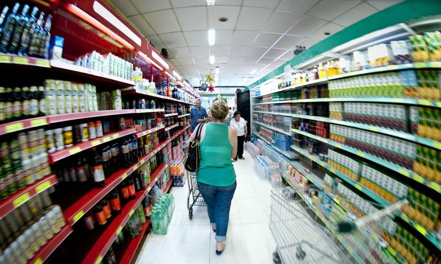
Prévia da inflação desacelera para 0,32% em outubro, mas acumulado de 12 meses passa do teto da metaBrésil : l'inflation préliminaire ralentit à 0,32 % en octobre, mais le cumul sur 12 mois dépasse le plafond de la cibleBrazil: preliminary inflation slows to 0.32% in October, but the 12-month rate breaks the target ceiling
23 OUT 2026 · Robson Alves
O Brasil acaba com a escala 6x1: duas folgas por semana a partir de 15 de dezembro e 40 horas em pouco mais de um anoLe Brésil met fin à la semaine de six jours : deux jours de repos à partir du 15 décembre et 40 heures d'ici un peu plus d'un anBrazil ends the six-day work week: two days off from 15 December and 40 hours in just over a year
23 OUT 2026 · Robson Alves
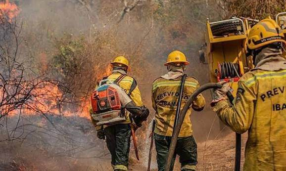
A Amazônia queima em outubro: focos quatro vezes maiores no Amazonas e fumaça que torna o ar insalubre em Manaus e SantarémL'Amazonie brûle en octobre : quatre fois plus de foyers en Amazonas et une fumée qui rend l'air malsain à Manaus et SantarémThe Amazon is burning in October: four times as many fires in Amazonas state and smoke that makes the air unhealthy in Manaus and Santarém
21 OUT 2026 · Robson Alves
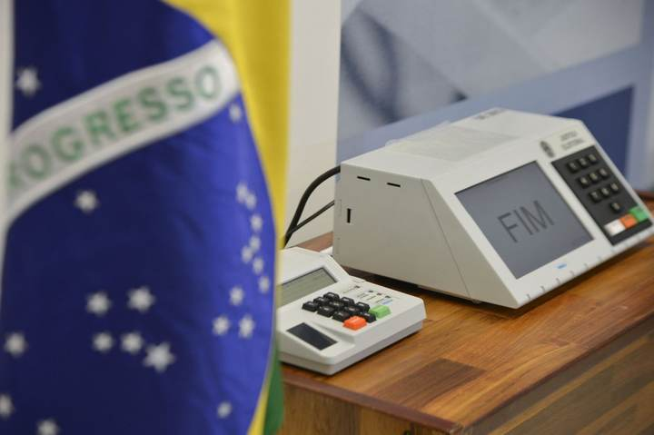
2º turno no domingo: como votar ou justificar da França, na mesma noite em que a hora mudaSecond tour brésilien dimanche : voter ou justifier depuis la France, la nuit même du changement d'heureBrazil's run-off on Sunday: how to vote or justify your absence from France, on the night the clocks change
21 OUT 2026 · La rédaction
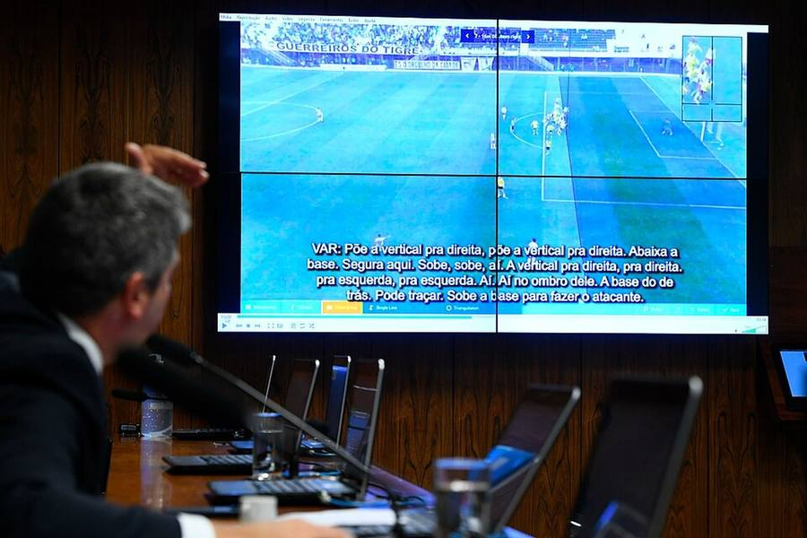
Brasil proíbe todas as bets: o que muda para o apostador, inclusive quem mora na FrançaLe Brésil interdit tous les paris en ligne : ce qui change pour le parieur, y compris en FranceBrazil bans all betting sites: what changes for bettors, including those living in France
30 SET 2026 · La rédaction
Justiça Eleitoral aceita ação sobre desfile que homenageou LulaLa Justice électorale accepte une action sur le défilé hommage à LulaElectoral Justice accepts case over parade that honored Lula
21 SET 2026 · 5 MIN · PT/FR · La rédaction
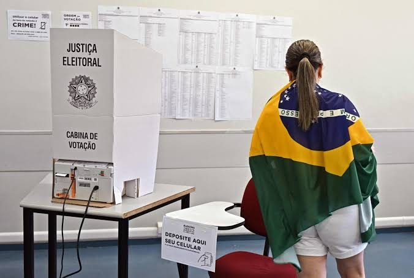
Quase 919 mil brasileiros podem votar fora do país, veja como funciona na EuropaPrès de 919 000 Brésiliens peuvent voter hors du pays, voici comment ça marche en EuropeNearly 919,000 Brazilians can vote from abroad — here is how it works in Europe
15 SET 2026 · 5 MIN · PT/FR ·